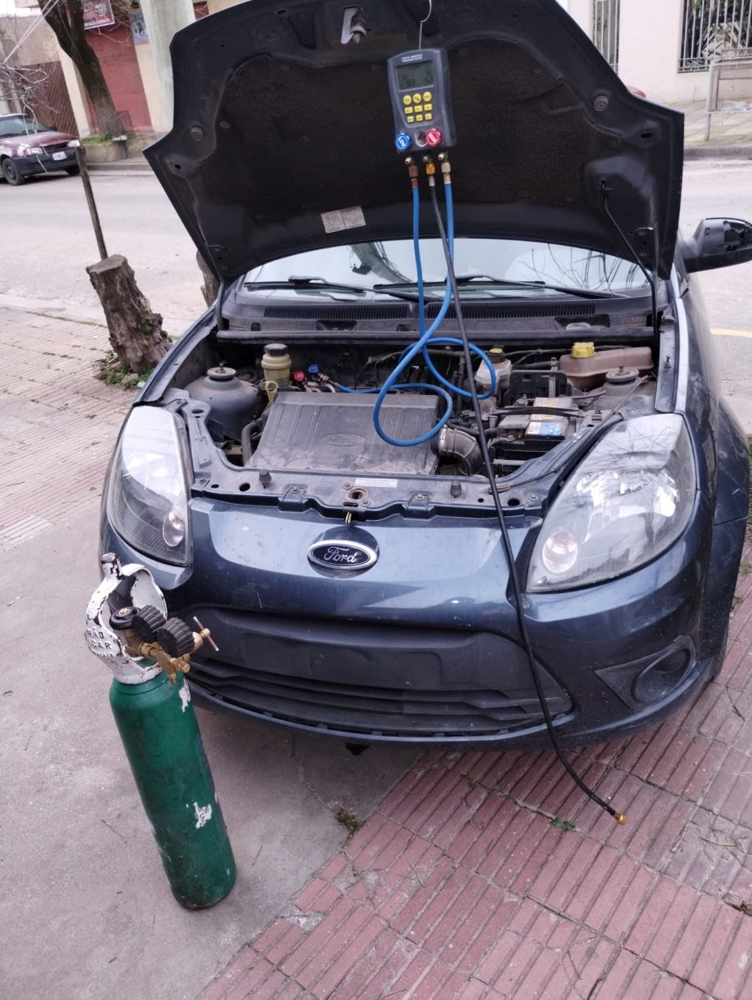

Diagnóstico preciso, control de presión, carga de gas refrigerante y reparación de fugas para el sistema de climatización de tu vehículo.
Verificamos la presión del circuito con manifold digital para detectar pérdidas de presión, fallas en el compresor o acoples defectuosos.
Realizamos presurización con nitrógeno para localizar microfugas y aplicamos vacío previo a la carga para eliminar humedad del circuito.
Efectuamos la carga con el gas refrigerante correspondiente y aceite sintético para el lubricado del compresor, verificando el enfriamiento en cabina.
Atendemos sistemas de aire acondicionado de todas las líneas nacionales e importadas:
Consultanos para coordinar un turno o revisar la carga de tu vehículo.
Consultar por WhatsApp 📱